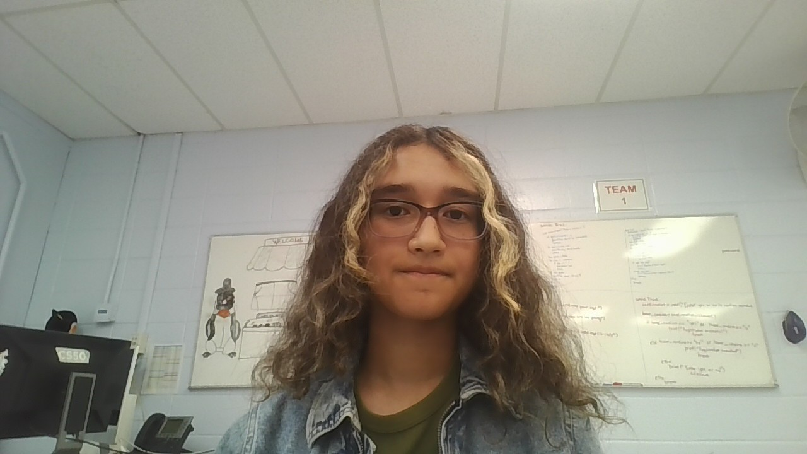

About Me
My Background
I am a freshman at Bergen County Technical Schools, and am currently attending the Teterboro campus. I chose the Computer Science program originally because both my parents were software engineers. However, after starting some surface-level research on HTML, I found that I had a real desire to learn coding and discover how softwares, specifically some AI platforms, worked.
Outside of school, I enjoy writing about small (and sometimes relatively complex) stories that I create with my siblings-or daydreams. I also have a passion for drawing, although I'm not exactly diverse with my mediums, and I've been playing the piano for almost 10 years now. Music, to be completely honest, is a deep-rooted pleasure for me and is one of my greatest comforts.
Technical Skills
- Currently Learning: HTML5, CSS, JavaScript, Bootstrap
- Tools: VS Code, Git, GitHub, Chrome DevTools, Google Classroom (for viewing assignments)
- Future Courses: Python and Intro to Machine Learning and AI - 10th Grade, Programming (Backend Frameworks) and Game Development - 11th Grade
- CS Capstone Project: Senior year and Intro to Computing (Java) - 12th Grade
Education
Bergen County Technical Schools - Teterboro
Class of 2029 [Freshman]
Current Course: Introduction to Programming
Career Goals
In all honesty, I applied to this school to help figure out what I wanted to be. Originally, I wanted to pursue a medical career--I wanted to be either a kid's doctor or a bioengineer. Now, I'm looking to enter the cybersecurity workforce or become a software engineer.